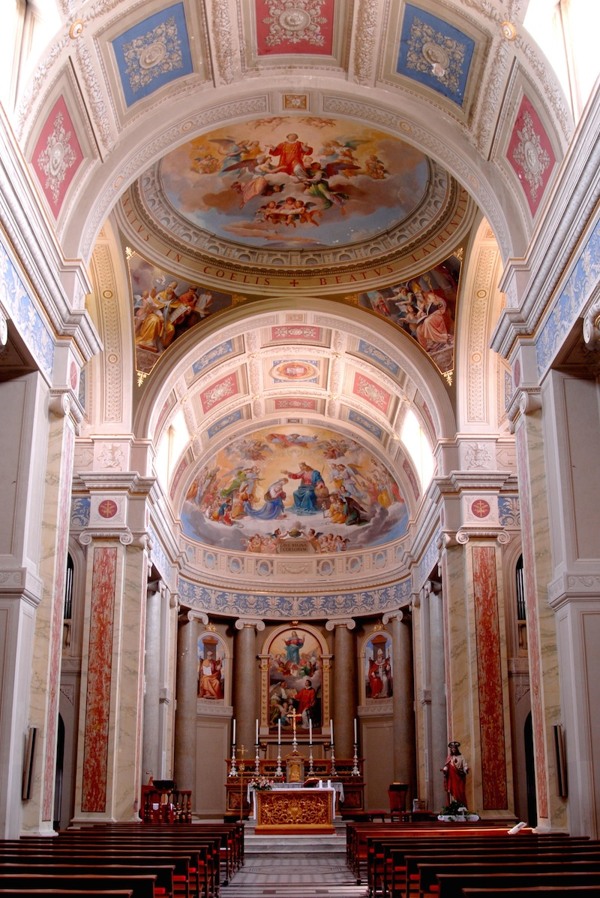

Erik e Alice
Sposi in Cristo, sabato 13 settembre 2014, ore 11
Chiesa Ss. Lorenzo e Biagio, Monte San Pietrangeli (FM)
Salve a tutti!
Abbiamo realizzato questa pagina affinché possa arrivare a tutti voi cari la nostra gioia, il nostro messaggio e tutte le informazioni utili affinché possiate godere a pieno e nel migliore dei modi del nostro grande passo!
Buona lettura! :)
Perché ci sposiamo?
In controtendenza rispetto ai tempi moderni siamo convinti che il modo migliore per realizzarsi nella vita sia unire anima e corpo nel formare una nuova famiglia, un nucleo d’amore solido e fermo su cui basare ogni attimo della nostra esistenza. E siamo altrettanto convinti che la grazia del sacramento del matrimonio sia un mezzo potentissimo e indispensabile per affrontare con forza e serenità tutte le difficoltà che inevitabilmente incontreremo nella nostra vita. Quando poi in ogni progetto, pensiero e sogno, ogni volta che recitavamo il Padre Nostro la prima persona a cui pensavamo era lei/lui abbiamo capito che era giunta l’ora di donarsi con gioia l’un l’altro! Ci sposeremo in Cristo perché siamo convinti che l’Amore è urgente, è il nostro vero destino e come ci insegna un’amica speciale che tanto importante è stata nella scelta del nostro sì per sempre “l’Amore è il centro della nostra vita, perché nasciamo da un atto d’amore, viviamo per amare e per essere amati, e moriamo per conoscere l’amore vero di Dio” (Chiara Corbella Petrillo)
Dove ci sposiamo?
Come da tradizione il matrimonio avrà luogo in terra natia della sposa. La “metropoli” di 2582 abitanti che ospiterà il tutto risponde al nome di Monte San Pietrangeli (Fermo).
L’altare delle nostre nozze sarà la Chiesa Ss. Lorenzo e Biagio, Largo Valadier 1. L’appuntamento sarà alle ore 11.

Pre-nozze
Ci siamo incontrati e poi innamorati nei locali della Cappella Universitaria di Siena. La comunità di San Vigilio, oltre a esserci cara in quanto lì ebbe inizio la nostra storia, è stata fondamentale per il nostro cammino di fede e di crescita personale, così come anche la realtà del Servizio Orientamento Giovani di Assisi e la famiglia del Movimento dei Focolari. Molte cose abbiamo scoperto in questi anni, tanti preziosi tesori finora poco apprezzati. Per questo intendiamo prepararci al meglio per il gran giorno attraverso un momento di preghiera con voi tutti. Pensiamo che una coppia non è tale se si rinchiude in sé stessa, desideriamo che la nostra nuova famiglia sia un luogo di accoglienza, ascolto e aiuto per tutti coloro che abbiamo accanto. Per questo la vostra presenza in questo momento ci è molto gradita e ci riempirà di gioia. Con il nostro amore, il vostro calore e la grazia di Dio siamo pronti e carichi per il momento più bello! Con tutti coloro che vorranno e potranno l’appuntamento è per il giorno 12, vi aggiorneremo quanto prima su luogo e ora (sicuramente tardo pomeriggio/sera). Vi aspettiamo!
Lista nozze
Abbiamo predisposto una lista nozze viaggio presso l’agenzia “Come in viaggio”, via Sallustio Bandini 21, Siena. Per saperne di più visitate il sito listadinozze.viaggiatori.biz Potete accedere dall’area “Parenti e Amici” con le seguenti credenziali:
- identificativo lista: 207
- password: SIENA207
Per regalare la quota desiderata potete andare direttamente in agenzia o, chi vive lontano da Siena e non può recarvisi personalmente, prenotare il regalo online e poi fare un bonifico. La lista chiuderà il giorno 8 settembre.
Oltre la festa
Sempre lungo il nostro cammino insieme abbiamo avuto la fortuna di incontrare Francesco e Alessandra che prima di noi hanno condiviso stesso concetto di famiglia. Colpiti dall’entusiasmo e dalla gioia con cui portano avanti il progetto 5pani2pesci, nonché dalla qualità dei lavori finora prodotti, abbiamo deciso di affidarci a loro per le riprese fotografiche dell’evento. La nostra speranza è che questo messaggio a noi caro possa arrivarvi per donarvi gioia ed energia.
Contatti
328 0332489
erik.urzi@gmail.com
328 2860117
alice.pappelli@gmail.com